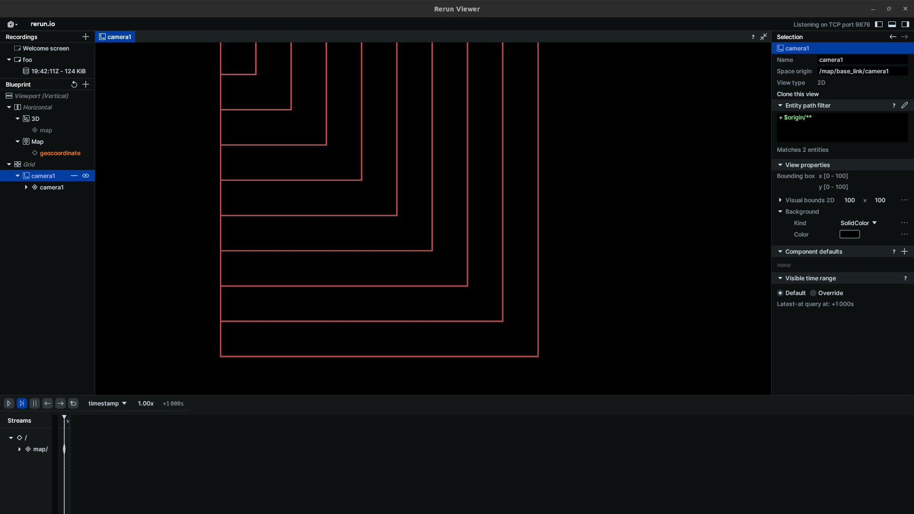
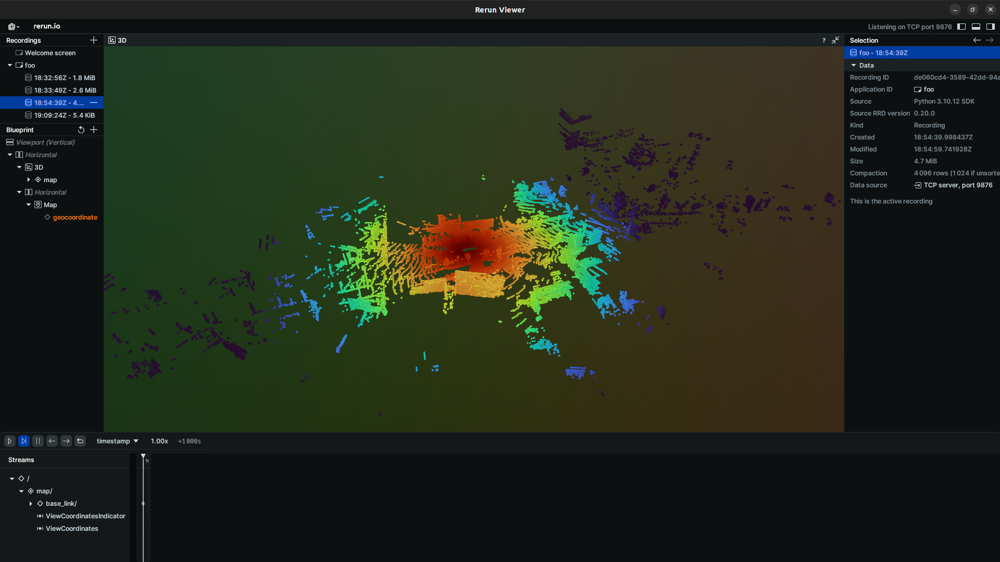

Visualization
Rendering with Tier4
If you want to visualize annotation results, Tier4 supports some rendering methods as below.
Scene

Specific Instance(s)

Note
You can also render multiple instances at once:
PointCloud

Note
In case of you want to ignore camera distortion, please specify ignore_distortion=True.
Save Recording
You can save the rendering result as follows:
When you specify save_dir, viewer will not be spawned on your screen.
Rendering with RerunViewer
If you want to visualize your components, such as boxes that your ML-model estimated, RerunViewer allows you to visualize these components.
For details, please refer to the API references.
To initialize RerunViewer, you can use the ViewerBuilder class:
>>> from t4_devkit.viewer import ViewerBuilder
# You need to specify `cameras` if you want to 2D spaces
>>> viewer = (
ViewerBuilder()
.with_spatial3d()
.with_spatial2d(cameras=["CAM_FRONT", "CAM_BACK"])
.with_labels({"car": 1, "pedestrian": 2})
.build(app_id="foo")
)
# Timestamp in seconds
>>> seconds: int | float = ...
Rendering 3D boxes
# Rendering 3D boxes
>>> from t4_devkit.dataclass import Box3D
>>> box3ds = [Box3D(...)...]
>>> viewer.render_box3ds(seconds, box3ds)
It allows you to render boxes by specifying elements of boxes directly.
# Rendering 3D boxes by specifying elements of boxes directly
>>> centers = [[i, i, i] for i in range(10)]
>>> frame_id = "base_link"
>>> rotations = [[1, 0, 0, 0] for _ in range(10)]
>>> sizes = [[1, 1, 1] for _ in range(10)]
>>> class_ids = [0 for _ in range(10)]
>>> viewer.render_box3ds(seconds, frame_id, centers, rotations, sizes, class_ids)

Rendering 2D boxes
For 2D spaces, you need to specify camera names in the viewer constructor, and render images by specifying camera names:
>>> import numpy as np
>>> from t4_devkit.dataclass import Box2D
# Rendering an image
>>> image = np.zeros((100, 100, 3), dtype=np.uint8)
>>> viewer.render_image(seconds, "camera1", image)
# Rendering 2D boxes
>>> box2ds = [Box2D(...)...]
>>> viewer.render_box2ds(seconds, "camera1", box2ds)
It allows you to render boxes by specifying elements of boxes directly:
# Rendering 2D boxes by specifying elements of boxes directly
>>> rois = [[0, 0, 10 * i, 10 * i] for i in range(10)]
>>> viewer.render_box2ds(seconds, "camera1", rois, class_ids)

Rendering point cloud
from t4_devkit.dataclass import LidarPointCloud
from t4_devkit.viewer import PointCloudColorMode
# Point cloud channel name
>>> lidar_channel = "LIDAR_TOP"
# Load point cloud from file
>>> pointcloud = LidarPointCloud.from_file(<PATH_TO_POINTCLOUD.pcd.bin>)
>>> color_mode = PointCloudColorMode.DISTANCE
>>> viewer.render_pointcloud(seconds, lidar_channel, pointcloud, color_mode)

Rendering LiDAR segmentation
from t4_devkit.dataclass import SegmentationPointCloud
from t4_devkit.viewer import PointCloudColorMode
# Point cloud channel name
>>> lidar_channel = "LIDAR_TOP"
# Load point cloud and label from file
>>> pointcloud = SegmentationPointCloud.from_file("<PATH_TO_POINTCLOUD.pcd.bin>", "<PATH_TO_LABEL.pcd.bin>")
>>> color_mode = PointCloudColorMode.SEGMENTATION
>>> viewer.render_pointcloud(seconds, lidar_channel, pointcloud, color_mode)

Rendering lanelet map